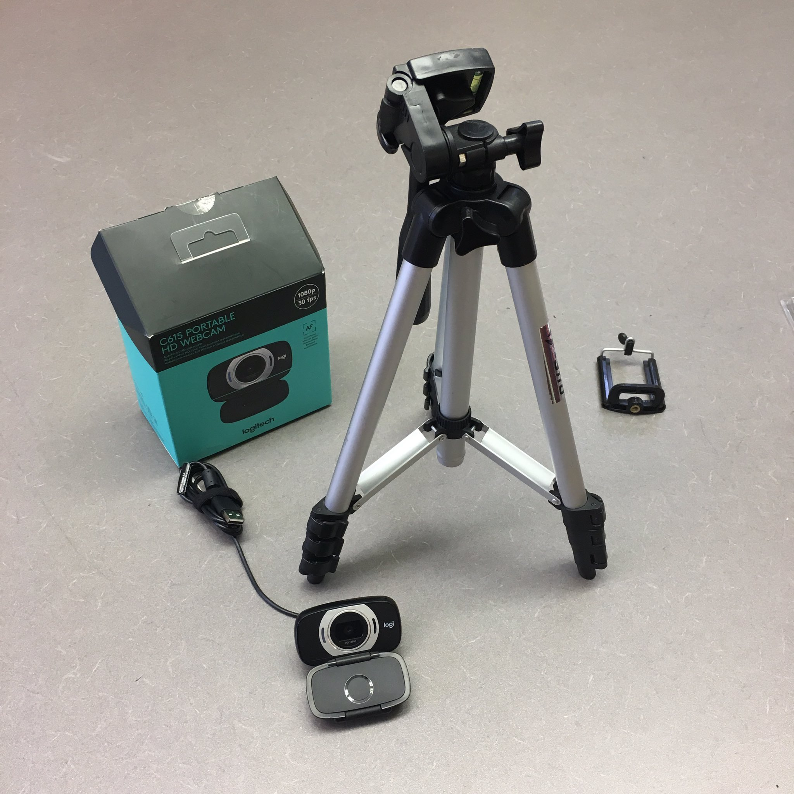

While it is becoming more common for conferences in some fields to be webcast in some form, this is still fairly unusual for linguistics conferences. To my knowledge (writing as of June 2019), none of the major conferences in theoretical linguistics (LSA, NELS, WCCFL, GLOW, etc.) has made remote attendance or participation possible.
Conferences continue to play an extremely central role in scholarly communication in linguistics, with many advances in analysis and theory being presented at conferences for years before they are available in print. I personally find attending conferences in person to be incredibly valuable, not only because it lets me absorb recent research, but also because it gives me a chance to interact in person with other linguists, particularly valuable when you’re at a school with a small program!
But precisely because conferences play such an important role in our field, I think it’s important for us to consider the barriers to in-person attendance that many linguists face when it comes to conference travel, for example:
…or even just not liking to travel. Many of these are more likely to affect junior scholars, those from smaller or less wealthy universities, or scholars from under-represented backgrounds. And in addition to all this, increasing concerns about climate change have many academics balancing a desire to reduce air travel against the need to participate in conferences.
For these reasons, I think it behooves all of us to start thinking about ways of making conferences more accessible, not only in our physical spaces but in terms of making remote participation both possible and meaningful.
Good news! It turns out that it’s actually pretty easy!
In June 2019 I organized the conference They, Hirself, Em, and YOU: Nonbinary pronouns in theory and practice (THEY 2019) with my colleagues Lee Airton and Lex Konnelly. One of our goals was to make the conference accessible to scholars without the funds to travel to attend in person, and to that end we investigated inexpensive options for webcasting the conference.
Rather than go through our local IT services, we ended up going with what I call the “shoestring webcast” option. This involved buying a webcam ($70) and getting a one-month Zoom membership ($14.95).[1] I happened to already have a tripod; if I hadn’t, that would have been an extra $10-$20.

We set up a separate Zoom “meeting” for each session of the conference, and emailed the links to all registered participants. Then during the conference itself, someone was in charge of starting the “meeting” and monitoring the webcam.
The remaining challenge was how to allow remote participants to see the slides. We couldn’t show them via screensharing for the slightly ridiculous reason that our webcam’s USB cable wasn’t long enough to reach the podium (so we couldn’t run the Zoom meeting through the presenter’s computer). Slides also often don’t show up very well via webcast.
A more technologically sophisticated setup (with a better camera, or just a longer USB cable) could get around this easily, but what we did was simply to put PDF copies of all slides and handouts into a Google Drive folder that we shared with all registered attendees.
(Another technologically dumb solution would have been to load the slides on the computer hosting the Zoom meeting, enable screensharing from there, and have the person monitoring the webcam also advance the slides along with the speaker.)
No. We made a conscious decision not to record any of the talks, so that the webcast was real-time only. This was mostly to avoid having to get permission to record from all of the speakers—which is something you would need if you did want to record—and to also avoid the potential logistics of recording some-but-not-all talks.
We got a lot of questions about this from people who had registered for remote participation, so in future I would make sure to emphasize it in registration materials.
This is everything that we did for the webcast itself. The one remaining piece is to make remote participation meaningful—to try to give remote attendees some of the opportunity for casual conversation and interaction that makes conferences so valuable to attend.
For this we did two things. First, we set up a discussion forum for the conference (in addition to having an official Twitter hashtag), so that people could chat before, during, and after the conference. We ended up using Slack, a free service is designed for workplace discussion, collaboration, and casual conversation, and importantly includes both multiple “channels” for topic-specific conversation, and direct messages. We encouraged both remote and in-person conference participants to use the Slack—it ended up being used not only for conference discussion, but for things like making dinner plans, or sharing pictures of cats!
We also allowed remote attendees to ask questions after each talk. These had to be submitted in writing (via Slack or the Zoom chat function), and were simply read aloud verbatim by the person monitoring the webcam.[2]
The feedback we got after THEY 2019 suggests that remote attendees found even our shoestring webcast a valuable means of conference participation. There is certainly lots of room for improvement, but if you’re interested in making a linguistics conference remotely accessible using some of these tools, please feel free to get in touch if I can offer any advice or support!
[1]: Actually, the cost of this was $54.95, because we paid an additional $40 to be able to accommodate 100+ people, though this turned out to be unnecessary.
[2]: Our rule of thumb was to aim to have an equal number of in-person and remote questions, but in fact we got very few remote questions submitted. But to make remote participation meaningful, I think it would be valuable to aim to have at least one remotely-submitted question per talk, or per session.